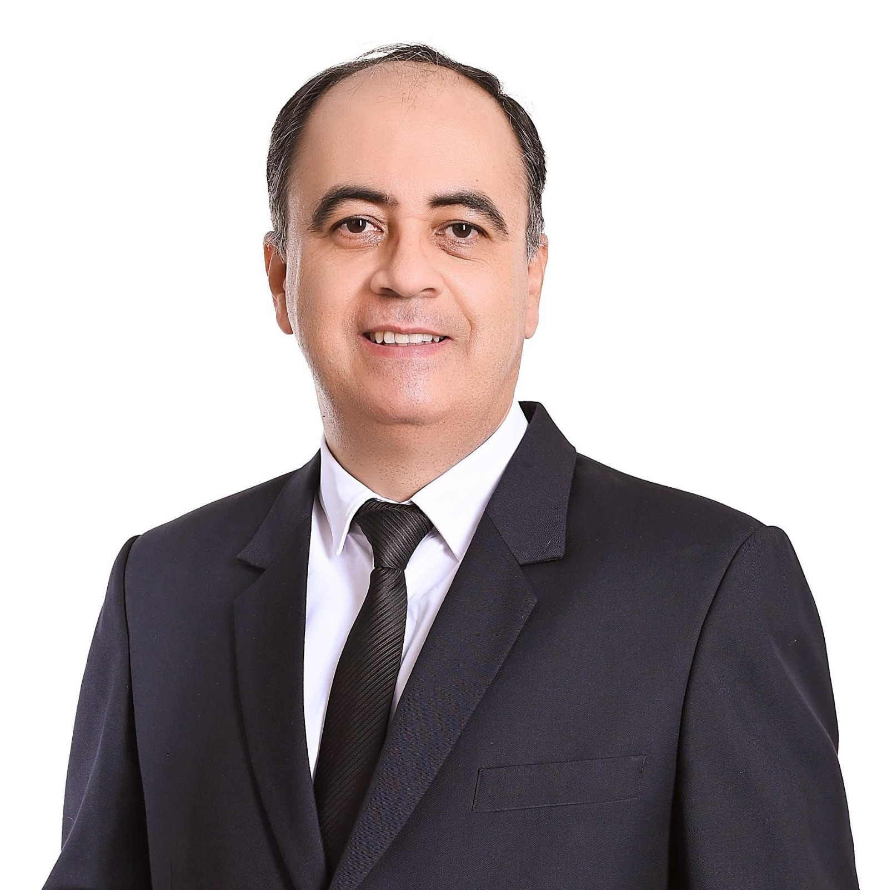

Bienvenida

¡Bienvenidos a la innovación digital e Ingeniería!
Como Decano de la Facultad de Ingeniería en la UPDS Sede Central Santa Cruz, es un verdadero gusto darles la bienvenida a este espacio diseñado para mentes motivadas e inquietas por la innovación y la tecnología.
Este congreso no es solo una serie de conferencias; es un punto de encuentro donde la teoría académica se da la mano con la realidad tecnológica que está transformando el mundo. Hemos reunido a expertos de primer nivel para explorar los pilares y avances que hoy están moviendo la innovación en todo el mundo:
Inteligencia Artificial y Agentes Inteligentes
Desde cómo resolver problemas reales en ingeniería hasta el desarrollo de software boliviano para mercados europeos.
Revolución Digital y Finanzas
Entendiendo el impacto real del Blockchain, las criptomonedas y las nuevas dinámicas de los mercados financieros.
Agilidad y Educación
Cómo Scrum evoluciona con la IA y de qué manera estamos transformando el aprendizaje de la programación para las nuevas generaciones.
En la UPDS creemos que la ingeniería es, ante todo, una herramienta para crear soluciones humanas. Los invito a que aprovechen cada sesión, participen preguntando y se lleven ideas que puedan empezar a ejecutar mañana mismo.
¡Que disfruten este espacio innovador del mundo digital y que estas jornadas sean el inicio de sus próximos grandes proyectos!